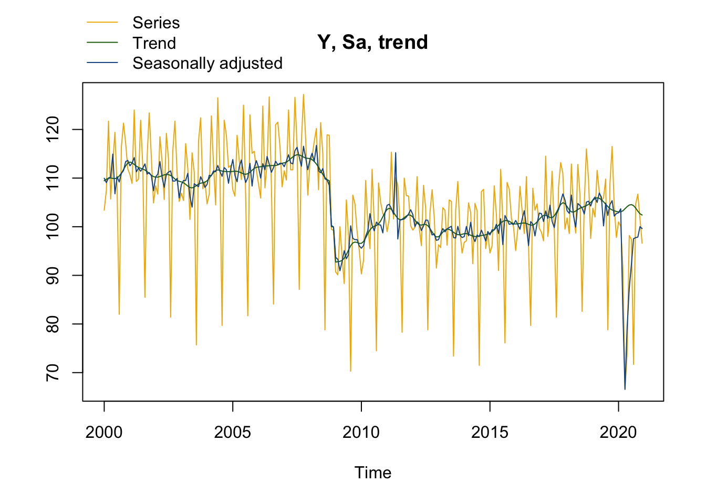
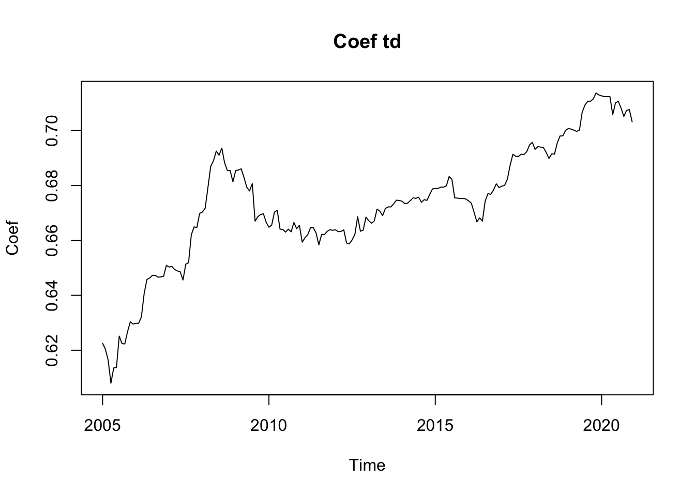
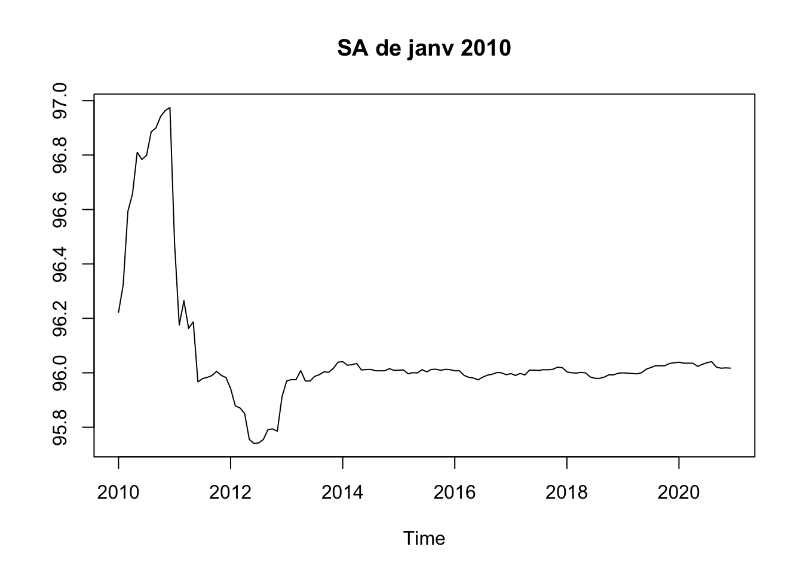

packages_to_install <- c("RJDemetra", "rjd3toolkit", "rjd3x13", "rjd3tramoseats", "rjd3providers", "rjd3workspace")
packages <- packages_to_install[! packages_to_install %in% installed.packages()[,"Package"]]
if (length(packages) > 0) {
install.packages(
packages,
repos = c("https://aqlt.r-universe.dev", "https://cloud.r-project.org")
)
}1 - R et JDemetra+
Désaisonnaliser une série temporelle
L’objectif de ce TP est d’apprendre à manipuler JDemetra+ sous R à travers le package RJDemetra V3.
Pour manipuler JDemetra+ sous R il y a actuellement deux façons :
Utiliser le JWSACruncher qui permet, à partir de la console, de mettre à jour un workspace JDemetra+ et d’exporter les résultats sans devoir ouvrir le logiciel. Pour faciliter son utilisation depuis R, le package
rjwsacruncherpeut être utilisé (voir TP5 - JDemetra+ en production).Utiliser les packages R associés à JDemetra+ qui permettent d’effectuer des désaisonnalisations avec les mêmes algorithmes et paramètres que JDemetra+ et de manipuler des workspaces.
Dans ce TP on utilisera les données du package RJDemetra mais n’hésitez pas à utiliser vos propres séries !
Pour faire de la désaisonnalisation sous R il existe plusieurs packages :
seasonaletx12qui permettent de faire du X-13ARIMA-SEATS en utilisant les programmes du US Census BureauRJDemetraqui est une interface R à JDemetra+ 2.x.y.Un ensemble de packages associés à JDemetra+ 3.x.y disponibles à l’addresse https://github.com/rjdverse. C’est ce que l’on utilisera dans ce TP. Ces packages nécessite d’avoir avoir Java 17 ou plus. En cas de problème d’installation voir le manuel d’installation .
Dans cette formation, nous utiliserons les packages suivants RJDemetra, rjd3toolkit, rjd3tramoseats, rjd3providers, rjd3workspace :
1 Créer une specification
Les modèles autour de la méthode X-13ARIMA peuvent être estimés avec rjd3x13::x13(), rjd3x13::regarima()) et rjd3x13::x11().
Les spécifications peuvent être crées avec les fonctions rjd3x13::spec_regarima, rjd3x13::spec_x11() ou rjd3x13::spec_x13() et peuvent être modifiées par :
Pour le préajustement :
rjd3toolkit::set_arima(),rjd3toolkit::set_automodel(),rjd3toolkit::set_basic(),rjd3toolkit::set_easter(),rjd3toolkit::set_estimate(),rjd3toolkit::set_outlier(),rjd3toolkit::set_tradingdays(),rjd3toolkit::set_transform(),rjd3toolkit::add_outlier(),rjd3toolkit::remove_outlier(),rjd3toolkit::add_ramp(),rjd3toolkit::remove_ramp(),rjd3toolkit::add_usrdefvar();Pour la décomposition :
rjd3x13::set_x11();Pour le benchmarking :
rjd3toolkit::set_benchmarking().
Exercice
Faire la désaisonnalisation d’une série avec X-13 avec la spécification suivante :
- détection automatique du schéma de décomposition, des outliers et du modèle ARIMA ;
- une correction des jours ouvrables “working days” et un effet graduel de Pâques.
Faire ensuite un graphique avec la série brute et la série désaisonnalisée.
Indice
Utiliser la spécification RSA4c pour la désaisonnalisation.
Si le modèle créé s’appelle sa_jd3, regarder les valeurs de sa_jd3$result$final et rjd3toolkit::sa_decomposition(sa_jd3).
Solution
sa_jd3 <- rjd3x13::x13(RJDemetra::ipi_c_eu[, "FR"], "rsa4")
sa_jd3Model: X-13
Log-transformation: no
SARIMA model: (2,1,1) (0,1,1)
SARIMA coefficients:
phi(1) phi(2) theta(1) btheta(1)
0.05291 0.18672 -0.52138 -0.66132
Regression model:
td lp easter LS (2008-11-01) LS (2009-01-01)
0.6927 2.0903 -2.5476 -9.2744 -7.2838
AO (2011-05-01) AO (2020-03-01) TC (2020-04-01)
13.1870 -21.1492 -35.6481
Seasonal filter: S3X3; Trend filter: H-13 terms
M-Statistics: q Good (0.355); q-m2 Good (0.389)
QS test on SA: Good (0.924); F-test on SA: Good (0.632)
For a more detailed output, use the 'summary()' function.y <- sa_jd3$result$preadjust$a1
sa <- sa_jd3$result$final$d11final
# ou :
decomp <- rjd3toolkit::sa_decomposition(sa_jd3)
y <- decomp$series
sa <- decomp$sa
# ou on peut directement utiliser les fonctions de rjd3x13 :
plot(sa_jd3, first_date = 2000 #Pour n'afficher le graphique qu'à partir de 200
)
Pour des graphiques ggplot2, on peut également utiliser le package ggdemetra3.
Exercice
Modifier le modèle précédent pour enlever l’effet graduel de Pâques.
Solution
spec_sans_easter_v3 <-
sa_jd3$estimation_spec |>
rjd3toolkit::set_easter(enabled = FALSE)
sa2_jd3 <- rjd3x13::x13(RJDemetra::ipi_c_eu[, "FR"], spec_sans_easter_v3)
sa2_jd3$result$preprocessingLog-transformation: no
SARIMA model: (2,1,1) (0,1,1)
SARIMA coefficients:
phi(1) phi(2) theta(1) btheta(1)
0.02527 0.10075 -0.59512 -0.71292
Regression model:
td lp LS (2008-11-01) AO (2011-05-01) AO (2020-03-01)
0.7032 2.1641 -12.7560 13.1047 -20.3006
TC (2020-04-01)
-36.4048
For a more detailed output, use the 'summary()' function.
Exercice
Calculer les p-valeurs associées au modèle Reg-ARIMA de la précédente spécification.
Indice
Récupérer le modèle Reg-ARIMA et utiliser la fonction summary().
Solution
summary(sa2_jd3$result$preprocessing)Log-transformation: no
SARIMA model: (2,1,1) (0,1,1)
Coefficients
Estimate Std. Error T-stat Pr(>|t|)
phi(1) 0.02527 0.09998 0.253 0.801
phi(2) 0.10075 0.07425 1.357 0.176
theta(1) -0.59512 0.08863 -6.715 7.65e-11 ***
btheta(1) -0.71292 0.04618 -15.439 < 2e-16 ***
---
Signif. codes: 0 '***' 0.001 '**' 0.01 '*' 0.05 '.' 0.1 ' ' 1
Regression model:
Estimate Std. Error T-stat Pr(>|t|)
td 0.70321 0.03417 20.582 < 2e-16 ***
lp 2.16412 0.76568 2.826 0.00498 **
LS (2008-11-01) -12.75601 1.66740 -7.650 1.99e-13 ***
AO (2011-05-01) 13.10471 1.97806 6.625 1.32e-10 ***
AO (2020-03-01) -20.30056 2.25944 -8.985 < 2e-16 ***
TC (2020-04-01) -36.40477 2.19426 -16.591 < 2e-16 ***
---
Signif. codes: 0 '***' 0.001 '**' 0.01 '*' 0.05 '.' 0.1 ' ' 1
Number of observations: 372, Number of effective observations: 359, Number of parameters: 11
Loglikelihood: -817.6149
Standard error of the regression (ML estimate): 2.330069
AIC: 1657.23, AICc: 1657.991, BIC: 1699.9462 Créer un workspace
Dans cette partie nous allons créer un workspace depuis R. Pour cela les fonctions qui peuvent être utilisées sont rjd3workspace::jws_new(), rjd3workspace::read_workspace(), rjd3workspace::jws_sap_new(), rjd3workspace::add_sa_item(), rjd3workspace::save_workspace().
Exercice
Créer un workspace qui va contenir une série désaisonnalisée selon 3 spécifications différentes.
Solution
jws <- rjd3workspace::jws_new()
jsap <- rjd3workspace::jws_sap_new(jws, "MP-1")
rjd3workspace::add_sa_item(jsap, "X13 avec Pâques", sa_jd3)
rjd3workspace::add_sa_item(jsap, "X13 sans Pâques", sa2_jd3)
rjd3workspace::add_sa_item(jsap, "TRAMO-SEATS", y, rjd3tramoseats::spec_tramoseats())
rjd3workspace::save_workspace(jws, "ws_v3.xml")
Exercice
Importer le workspace précédent et récupérer :
- Le nom du premier multi-processing
- Le nombre de modèles dans ce premier multi-processing
- L’ensemble des séries brutes
- Le 2ème modèle
Solution
# charge tous les modèles du workspace :
jws <- rjd3workspace::.jws_open("ws_v3.xml")
ws <- rjd3workspace::read_workspace(jws)
names(ws$processing)[1][1] "MP-1"length(ws$processing[[1]]) # Nombre de multiprocessing[1] 3Autre façon de faire similaire à RJDemetra :
# charge tous les modèles du workspace :
jws <- rjd3workspace::.jws_open("ws_v3.xml")
rjd3workspace::jws_compute(jws)
rjd3workspace::ws_sap_count(jws) # Nombre de multiprocessing[1] 1jsap1 <- rjd3workspace::jws_sap(jws, 1) # Le premier multiprocessing
rjd3workspace::sap_name(jsap1)[1] "MP-1"rjd3workspace::sap_sai_count(jsap1)[1] 3model2 <- rjd3workspace::jsap_sai(jsap1, 2) # On récupère l'objet associé au 2ème modèle
rjd3workspace::read_sai(model2)$ts
$name
[1] "X13 sans Pâques"
$moniker
$source
[1] ""
$id
[1] "6e59eca6-cbf2-4b20-8a19-5dc68616f3a0"
attr(,"class")
[1] "JD3_TSMONIKER"
$metadata
NULL
$data
Jan Feb Mar Apr May Jun Jul Aug Sep Oct Nov Dec
1990 92.1 92.3 102.1 93.0 93.3 100.8 92.9 66.7 95.8 105.0 96.7 89.2
1991 92.5 89.2 97.4 93.8 87.5 100.3 93.4 64.3 96.9 103.5 94.0 92.1
1992 90.7 89.0 99.4 93.7 86.1 101.3 90.4 62.9 96.6 98.4 91.9 92.6
1993 82.3 84.0 95.6 88.3 82.2 97.9 85.5 61.3 93.7 93.0 88.3 92.1
1994 83.6 83.7 97.0 88.3 88.3 102.9 87.3 65.9 98.2 98.0 96.8 98.0
1995 91.8 90.1 102.9 90.4 91.6 103.7 90.6 66.8 98.7 101.4 97.2 94.8
1996 92.0 91.1 98.1 94.3 90.5 101.8 96.1 66.3 98.9 105.0 95.0 96.0
1997 91.9 91.3 99.1 102.8 93.2 108.2 100.4 70.5 107.3 114.1 99.6 106.7
1998 98.2 98.7 109.3 103.7 97.6 114.7 106.1 72.1 111.5 112.6 105.6 107.4
1999 97.2 98.3 114.5 104.8 99.9 120.2 105.7 76.1 115.2 115.1 111.1 114.0
2000 103.4 107.5 121.7 105.7 113.1 119.4 108.1 82.0 116.4 121.3 117.2 111.9
2001 110.7 108.9 124.0 109.3 109.8 121.9 112.4 85.5 114.1 123.4 114.2 104.9
2002 108.4 106.7 118.5 113.4 105.6 119.2 113.9 81.4 115.6 121.7 111.0 105.2
2003 106.9 105.4 117.1 112.0 101.5 115.2 111.2 75.7 117.5 122.4 107.8 109.3
2004 104.7 106.7 122.8 112.7 104.5 126.5 111.1 79.7 121.9 118.8 112.2 112.6
2005 107.6 106.3 118.8 113.7 109.7 125.0 106.4 81.7 123.0 115.1 115.5 111.6
2006 108.8 105.9 124.8 108.0 113.1 126.7 108.7 84.1 121.0 121.5 116.6 108.2
2007 111.5 109.6 124.0 111.7 111.7 126.6 116.6 87.1 117.3 127.2 118.0 106.5
2008 113.2 114.4 117.5 120.2 107.6 121.4 115.1 78.8 118.9 118.8 99.5 99.2
2009 90.7 90.1 100.0 93.9 88.3 105.5 97.9 70.3 106.5 104.7 99.0 95.2
2010 90.3 93.1 109.5 100.4 95.5 111.8 100.8 74.5 109.0 105.0 102.7 101.9
2011 99.0 101.6 115.3 101.6 110.1 108.5 101.0 78.3 110.0 106.4 106.3 100.2
2012 99.3 99.9 110.3 99.8 96.1 108.5 103.8 78.8 102.9 107.6 101.9 91.5
2013 96.3 95.7 103.9 103.4 96.2 105.5 105.2 73.4 103.3 109.3 99.0 94.6
2014 96.8 97.1 104.9 102.9 92.4 104.8 103.3 71.5 107.2 107.7 95.5 98.4
2015 94.6 96.1 108.4 102.4 91.0 111.8 101.1 76.1 109.1 107.7 101.8 99.9
2016 95.1 99.6 108.3 103.3 98.6 110.3 95.8 79.7 107.9 103.4 104.7 99.7
2017 98.9 97.1 114.5 98.0 102.7 111.4 99.5 81.4 108.2 113.2 111.0 99.5
2018 101.8 98.6 112.9 103.0 98.7 112.8 106.6 82.6 104.7 116.0 109.6 97.6
2019 103.8 102.0 111.6 107.2 105.2 106.0 109.8 78.8 109.0 116.5 104.0 97.8
2020 101.0 100.1 91.8 66.7 73.7 98.2 97.4 71.7 104.7 106.7 101.6 96.6
attr(,"class")
[1] "JD3_TS"
$domainSpec
Specification
Series
Serie span: All
Preliminary Check: Yes
Estimate
Model span: All
Tolerance: 1e-07
Transformation
Function: AUTO
AIC difference: -2
Adjust: NONE
Regression
Calendar regressor: WorkingDays
with Leap Year: Yes
AutoAdjust: TRUE
Test: REMOVE
Easter: No
Pre-specified outliers: 0
Ramps: No
Outliers
Detection span: All
Outliers type:
- AO, critical value : 0 (Auto)
- LS, critical value : 0 (Auto)
- TC, critical value : 0 (Auto)
TC rate: 0.7 (Auto)
Method: ADDONE (Auto)
ARIMA
SARIMA model: (0,1,1) (0,1,1)
SARIMA coefficients:
theta(1) btheta(1)
0 0
Specification X11
Seasonal component: Yes
Length of the Henderson filter: 0
Seasonal filter: FILTER_MSR
Boundaries used for extreme values correction :
lower_sigma: 1.5
upper_sigma: 2.5
Nb of forecasts: -1
Nb of backcasts: 0
Calendar sigma: NONE
Benchmarking
Is enabled: No
$estimationSpec
Specification
Series
Serie span: All
Preliminary Check: Yes
Estimate
Model span: All
Tolerance: 1e-07
Transformation
Function: AUTO
AIC difference: -2
Adjust: NONE
Regression
Calendar regressor: WorkingDays
with Leap Year: Yes
AutoAdjust: TRUE
Test: REMOVE
Easter: No
Pre-specified outliers: 0
Ramps: No
Outliers
Detection span: All
Outliers type:
- AO, critical value : 0 (Auto)
- LS, critical value : 0 (Auto)
- TC, critical value : 0 (Auto)
TC rate: 0.7 (Auto)
Method: ADDONE (Auto)
ARIMA
SARIMA model: (0,1,1) (0,1,1)
SARIMA coefficients:
theta(1) btheta(1)
0 0
Specification X11
Seasonal component: Yes
Length of the Henderson filter: 0
Seasonal filter: FILTER_MSR
Boundaries used for extreme values correction :
lower_sigma: 1.5
upper_sigma: 2.5
Nb of forecasts: -1
Nb of backcasts: 0
Calendar sigma: NONE
Benchmarking
Is enabled: No
$pointSpec
Specification
Series
Serie span: All
Preliminary Check: Yes
Estimate
Model span: All
Tolerance: 1e-07
Transformation
Function: LEVEL
AIC difference: -2
Adjust: NONE
Regression
Calendar regressor: WorkingDays
with Leap Year: Yes
AutoAdjust: FALSE
Test: NO
Easter: No
Pre-specified outliers: 4
- LS (2008-11-01), coefficient: -12.7560067943903 (ESTIMATED)
- AO (2011-05-01), coefficient: 13.1047116166881 (ESTIMATED)
- AO (2020-03-01), coefficient: -20.3005616124476 (ESTIMATED)
- TC (2020-04-01), coefficient: -36.4047650490134 (ESTIMATED)
Ramps: No
Outliers
Is enabled: No
ARIMA
SARIMA model: (2,1,1) (0,1,1)
SARIMA coefficients:
phi(1) phi(2) theta(1) btheta(1)
0.02527 0.10075 -0.59512 -0.71292
Specification X11
Seasonal component: Yes
Length of the Henderson filter: 0
Seasonal filter: FILTER_MSR
Boundaries used for extreme values correction :
lower_sigma: 1.5
upper_sigma: 2.5
Nb of forecasts: -1
Nb of backcasts: 0
Calendar sigma: NONE
Benchmarking
Is enabled: No
$results
Model: X-13
Log-transformation: no
SARIMA model: (2,1,1) (0,1,1)
SARIMA coefficients:
phi(1) phi(2) theta(1) btheta(1)
0.02527 0.10075 -0.59512 -0.71292
Regression model:
td lp LS (2008-11-01) AO (2011-05-01) AO (2020-03-01)
0.7032 2.1641 -12.7560 13.1047 -20.3006
TC (2020-04-01)
-36.4048
Seasonal filter: S3X3; Trend filter: H-13 terms
M-Statistics: q Good (0.316); q-m2 Good (0.346)
QS test on SA: Good (1.000); F-test on SA: Good (0.646)
For a more detailed output, use the 'summary()' function.# Pour extraire toutes les séries brutes il faut faire une boucle :
all_y <- lapply(
lapply(
seq_len(rjd3workspace::sap_sai_count(jsap1)),
rjd3workspace::.jsap_sai, jsap = jsap1
),
rjd3workspace::get_raw_data
)3 Manipuler les objets Java
La manipulation des objets Java se fait de la même façon qu’avec RJDemetra : .jx13() pour estimer les modèles (nom de la fonction légèrement différente), rjd3toolkit::dictionary() pour connaitre l’ensemble des objets exportables et rjd3toolkit::result() et rjd3toolkit::user_defined() pour exporter des objets.
Exercice
Créer un modèle à partir de la fonction .jx13() et la spécification sans effet graduel de pâques calculée dans la section 1.
Solution
myjsa <- rjd3x13::.jx13(RJDemetra::ipi_c_eu[, "FR"], spec_sans_easter_v3)
rjd3toolkit::result(myjsa, "sa") Jan Feb Mar Apr May Jun Jul
1990 93.24955 95.30940 94.71796 93.81684 93.54929 92.92520 94.21426
1991 93.59169 92.31215 92.64331 92.17822 87.64814 94.71770 92.26714
1992 91.58585 91.95491 92.44861 92.08835 91.15320 90.56855 89.24060
1993 87.99561 87.69727 86.39964 86.75333 87.31361 86.83199 86.72062
1994 89.29811 87.67745 87.97237 89.30396 91.16780 91.47286 90.78785
1995 95.25155 94.23926 93.90860 94.00837 92.19870 91.94726 93.82107
1996 93.17973 92.48812 93.89705 93.13793 91.31516 94.72025 94.11951
1997 93.26078 95.70964 94.51600 101.81259 96.59510 98.42946 98.22737
1998 102.21091 103.17118 101.63558 102.93616 103.62068 102.28550 103.77953
1999 103.79658 102.78743 103.69074 104.14106 106.09004 107.66846 105.67101
2000 110.10497 109.06807 110.12489 109.82704 114.79035 106.77270 110.36351
2001 112.60460 113.23756 114.26231 110.62978 111.90510 111.50689 112.11052
2002 110.38323 110.96526 110.79945 111.78627 107.92165 110.99153 111.32654
2003 108.79624 109.74015 109.32134 109.98806 106.03352 104.23265 108.95547
2004 108.85117 110.81356 110.13728 110.54560 111.16466 112.78890 111.54538
2005 113.93316 110.84172 106.41816 114.18867 113.55450 111.11371 109.26845
2006 112.42833 110.33885 112.86559 111.31529 114.27002 113.01129 111.32242
2007 112.55694 113.84939 115.05181 112.93951 112.66924 115.79095 116.41635
2008 114.19262 115.43079 111.37148 119.20887 111.21601 111.20490 111.96753
2009 94.06595 93.66765 91.59029 92.93345 94.74414 93.45541 94.24009
2010 96.01716 96.45680 98.71937 99.12528 102.35680 100.33373 99.14123
2011 104.73308 104.88254 104.41611 102.25226 114.86761 97.50904 101.41146
2012 102.69646 100.10116 101.67631 99.91395 98.94360 100.23048 101.39058
2013 97.38049 98.67284 97.59268 100.48330 99.43876 99.96091 100.12816
2014 98.00446 100.13410 98.51684 99.69373 98.14253 97.00824 98.38996
2015 98.43075 99.49303 99.43229 99.18875 98.89465 101.71133 96.50599
2016 101.43553 100.46907 96.73895 102.94029 103.57872 100.21169 96.40288
2017 102.83484 101.21980 102.93078 100.60288 104.65915 101.21299 100.09477
2018 103.34498 102.86547 103.87513 103.61900 100.09104 104.87134 104.57061
2019 105.55319 106.23769 105.20469 105.62380 106.14533 100.29916 105.00063
2020 102.89360 103.74645 83.07039 65.24951 79.29577 87.38128 92.35517
Aug Sep Oct Nov Dec
1990 92.38173 93.51234 93.42343 92.18042 90.41279
1991 92.42873 92.22349 92.01173 92.00186 90.59538
1992 93.45078 89.51221 89.56165 89.95835 88.19546
1993 89.35917 86.63394 86.80871 84.00049 87.21539
1994 91.47220 91.08205 91.83094 92.70377 95.22430
1995 92.43935 93.94802 92.67708 93.29762 94.39315
1996 94.63683 93.94307 93.57709 93.75204 93.25425
1997 101.68755 99.71695 102.44668 100.79734 101.82217
1998 103.67043 103.81100 103.12842 104.36147 102.98643
1999 105.51412 107.47894 108.01349 107.32689 110.17856
2000 109.19601 111.03577 111.63442 113.48334 113.71019
2001 112.97886 110.95332 111.23200 110.59473 107.49517
2002 111.59373 109.55119 109.54524 110.06801 106.01718
2003 108.67882 108.40221 110.46920 109.44340 108.13524
2004 110.49903 112.36423 111.93619 108.93019 111.82427
2005 110.17307 113.24026 108.51104 112.00879 113.43584
2006 112.19306 113.67537 112.74018 112.68488 112.70890
2007 114.35913 112.60498 116.41114 113.72338 111.21506
2008 109.87755 109.64124 108.31326 99.94885 99.31443
2009 100.20028 97.57161 97.15487 97.05587 95.50465
2010 100.91566 100.33425 100.28702 98.54035 102.42445
2011 101.41452 101.52787 102.02302 102.59491 103.34800
2012 101.29425 99.61270 98.34668 98.61297 97.28502
2013 97.82035 97.74060 100.19255 98.38971 97.85776
2014 98.04534 99.36208 98.45915 97.19073 99.09353
2015 102.42001 101.51956 100.68665 100.72423 100.52605
2016 101.09905 100.59846 98.34729 100.76466 102.91719
2017 102.74040 103.61311 105.30626 106.79695 105.62276
2018 103.94813 102.71388 105.22599 105.29463 104.37228
2019 102.51548 104.62023 105.52898 102.28202 102.79014
2020 97.79844 97.77412 98.09488 100.12642 99.63962Pour les révisions, la fonction rjd3x13::x13_revisions() facilite grandement la tâche. L’historique des révisions peut s’exporter à partir de trois paramètres :
data_idsqui permet d’exporter des statistiques ;ts_idsqui permet d’exporter des estimations d’une composante à une certaine date ;cmp_idsqui permet l’ensemble des estimations d’une composante à une ensemble de dates.
data_ids <- list(
# Export du coefficient du premier régresseur jours ouvrables
list(start = "2005-01-01", id = "regression.td(1)"))
ts_ids <- list(
# Export de l'historique des estimations de la séries SA de janv 2010 à partir de janvier 2010
list(period = "2010-01-01", start = "2010-01-01", id = "sa"))
cmp_ids <- list(
# Export de l'ensemble des tendances estimées entre janv 2010 et dec 2014
list(start = "2010-01-01", end = "2014-12-01", id = "t"))
rh <- rjd3x13::x13_revisions(
sa2_jd3$result$preadjust$a1,
spec = sa2_jd3$result_spec,
data_ids, ts_ids, cmp_ids)
plot(rh$data$`regression.td(1)`,
ylab = "Coef", main = "Coef td")
plot(rh$series$sa,
ylab = NULL, main = "SA de janv 2010")
ncol(rh$components$t) # nombre de séries exportées[1] 60